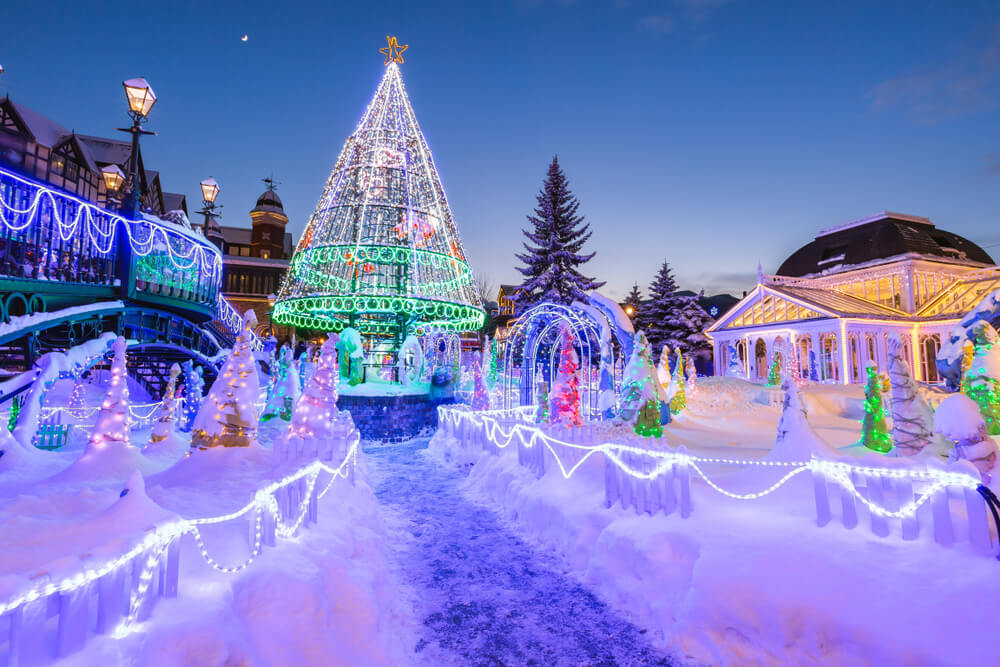
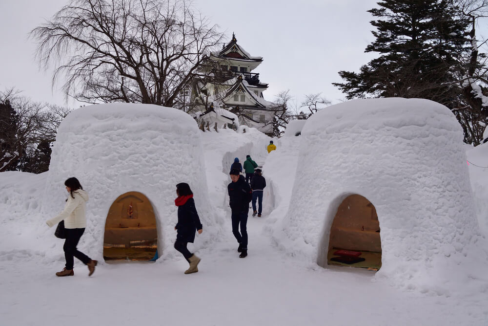
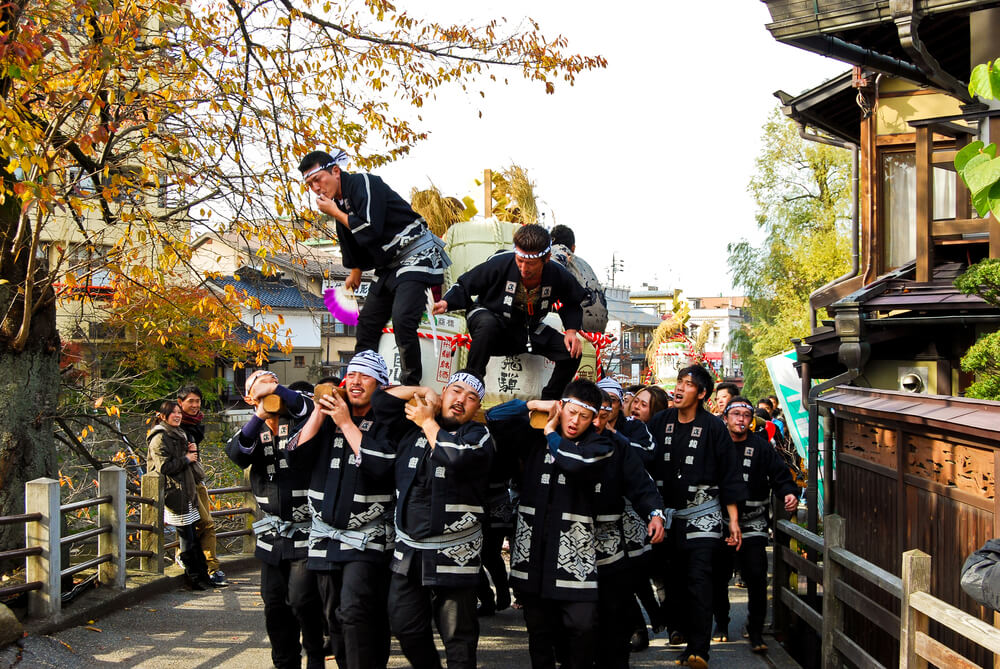
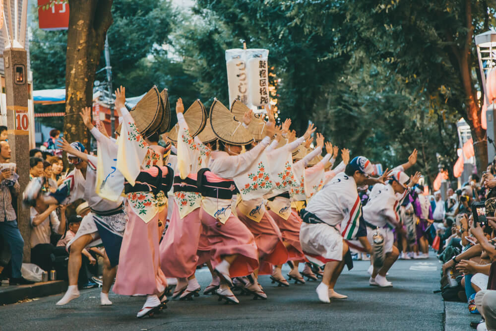
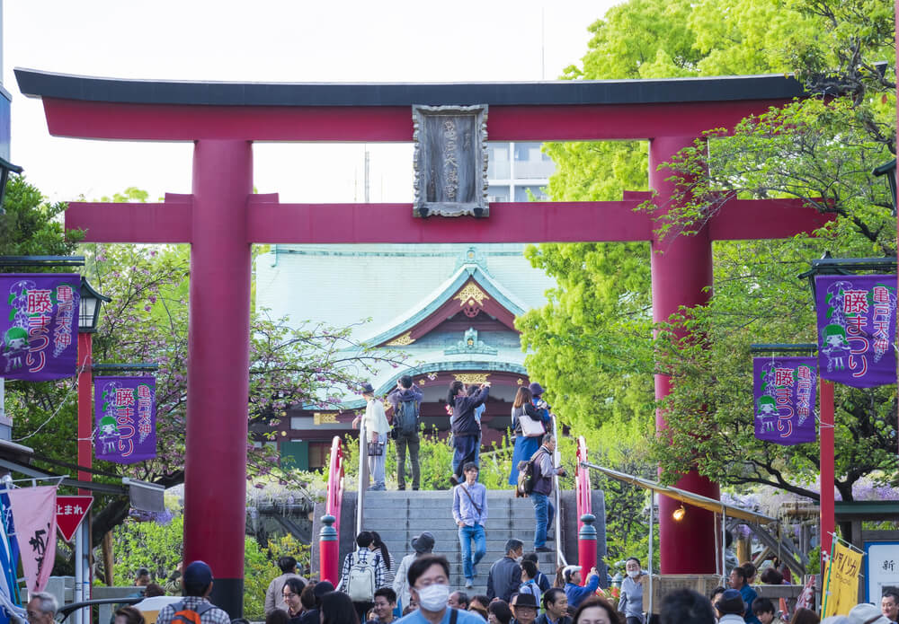
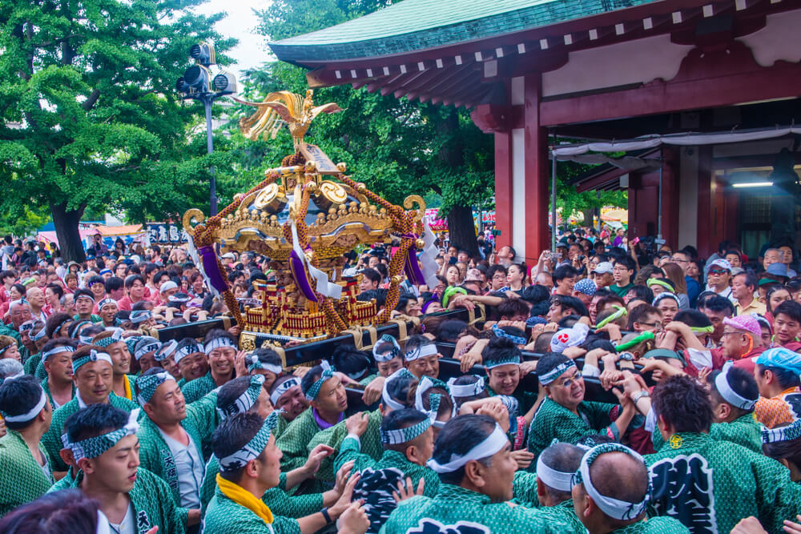
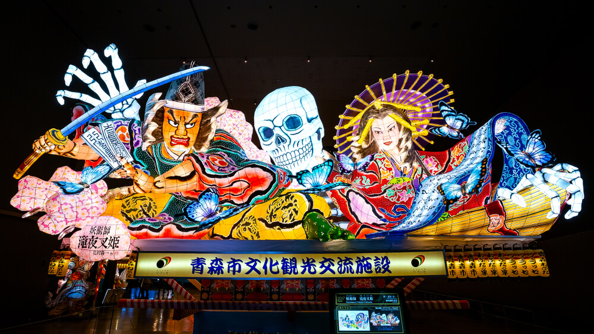

Sapporo Kar Festivali
Şubat ayında tam bir hafta boyunca süren Sapporo Kar Festivali yılın en büyük festivallerinden birisi olarak anılıyor.
Başlangıç tarihi 1950’lere dayanan bu festivalin çıkış hikayesi ise lise öğrencilerinin Sapporo’nun merkezinde bulunan Odori Parkı’na
kar heykelleri inşa etmeleri ile başlıyor. Katılımcıların oldukça eğlendiği,
büyük etkinliklere ev sahipliği yapan festivalde konserler ve birçok aktiviteler düzenleniyor.

Towada Gölü Kar Festivali
Yasumiya Kasabası’nda düzenlenen Towada Gölü Kar Festivali şubat ayının başında gerçekleşiyor.
Towada Gölü’nün güney kısmında bulunan ahşap heykellerin bulunduğu alanla kutlanan festivale gün boyunca istediğiniz
saatte katılabilirsiniz. Oldukça eğlenceli bu festivalde kar labirentinden çıkmaya uğraşabilir,
Japon iglosunu yakından inceleyebilir ve harika yerel lezzetlerden tadabilirsiniz.

Takayama Festivali
Japonya’nın en güzel festivalleri arasında gösterilen Takayama Festivali’nde baharın gelişi karşılanıyor.
Bu festival her yıl 14-15 Nisan tarihlerinde Takayama eski kentinde yer alan Hie Türbesinde gerçekleşiyor.
Bir diğer ismi Sanno Bahar Festivali olan festivalde yaklaşık bir düzine kadar Yatai ismi verilen şamandıra takımı yer alıyor.
Şamandıralar festival günlerinde sabah ve öğle saatleri arasında sokaklarda gösteriye çıkarılıyorlar. Sıkı bir hava muhalefeti
söz konusu olursa şamandıralar depolarından çıkarılmıyor ancak depo kapıları açıldığı için halk şamandıraları görme imkanına sahip oluyor.
Festivalde şamandıra töreninin ardında Karakuri bebeklerinin dans gösterisi
ve mikoshi yani taşınabilir türbe geçidi ve son olarak masturi ismindeki gece festivali gerçekleşir.

Yayoi Festivali
Baharın gelişinin kutlandığı bir diğer özel gün de Yayoi Festivali. Nikko kentinde kutlanan şamandıra
geçit töreni olan festival, dünya mirası olarak kabul edilen özel tapınak ve türbelerde gerçekliyor. Her yıl 17 Nisan tarihinde kutlanan
festivalde Hana Yatai olarak adlandırılan ve her kenti temsilen gösterişli bir şamandıra geçişi yapılıyor.

Çiçek Festivali
Budha’nın doğumunun kutlandığı Çiçek Festivali, ‘Hana Matsuri’ olarak biliniyor.
Tüm Japonya genelinde düzenlenen bu festival için aslında bir nevi anma töreni diyebiliriz. Japon geleneksel kültürünün önemli bir parçası
olan Hana Matsuri gününde içine bebek Budha figürlerinin yerleştirildiği levhalar çiçeklerle süsleniyor. Ana tapınakta Budha’nın doğumunu
simgeleyen bir tablonun gösterilmesinin ardından
‘Ama-Cha’ isimli özel olarak hazırlanan su, ibadet edenler tarafından figürlerin etrafına serpiliyor.

Mor Salkım Festivali
Japonya denildiğinde birçok kişinin aklına ilk olarak kiraz çiçekleri gelse de bahar aylarında doğanın uyanışının en güzel
tanıklarından birisi olan mor salkımların da bir festivali var. Fuji Matsuri ismiyle düzenlenen bu festival, Tokyo’nun Kameido
Tenjin Tapınağı’nda gerçekleşiyor. Nisan ortasında başlayan bu harikulade mor salkım şöleni mayıs ayının başına kadar sürüyor.
Bu tarihlerde yolunuz Tokyo’ya düşerse baharın
renkli yüzüne şahitlik etmek için Sonu metro hattını kullanarak festivalin düzenlendiği Kameido Tenjin Tapınağı’na kolaylıkla ulaşabilirsiniz.

Kanda Festivali
Tokyo’nun üç büyük festivalinden birisi olan Kanda Festivalinde caddelerde yüze yakın Mikoshi geçidi ve
çeşitli dans gösterileri gerçekleşiyor. Genellikle mayıs ayının ikinci haftasında gerçekleşen festival, bir hafta boyunca devam ediyor.
Festivalin ana etkinlikleri ise çoğunlukla hafta sonuna denk gelen günlerde gerçekleşiyor.
Yıllardır düzenlenen Kanda Festivali’nde yapılan kutlamaların halka zenginlik ve iyi şans getireceğine inanılıyor.

Aomori Nebuta Festivali
Her yıl ağustos ayının ilk haftasında düzenlenen bu renkli etkinliğe binlerce kişi katılıyor. Aomori JR tren istasyonun
yakınlarındaki sokaklarda gösterilen nebuta şamandıraları ahşap taban ve metal çerçeveden oluşuyor. Bu çerçevelerin üzerleri de washi isimli
Japon kağıtları ile boyanıyor. Şamandıraların tamamlanmaları ise yaklaşık bir yıl kadar zaman alabiliyor.
Festivalin dans bölümünde ise haneto dansçıları
festivale özel kostümler giyerek gösterilerini sergiliyorlar. Siz de haneto kostümünüzü satın alarak Aomori Nebuta Festivaline katılabilirsiniz.